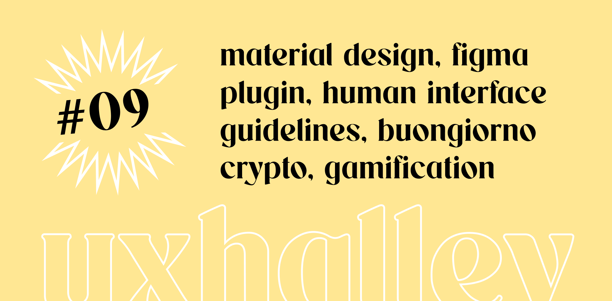

UX Halley, newsletter per designer
uxhalley, edizione #09
30 gennaio 2023 — UX Halley: una newsletter bisettimanale che raccoglie news e links utili sulla UX. Le regole sono semplici: max 5 minuti di lettura; se ti interessa, lo approfondisci; se ti piace, lo condividi; a prescindere ci vediamo tra due settimane. Facile facile.
Immagine di copertina dell'edizione di UX Halley, newsetter per designer
Link per designer suggerito nell'edizione di UX Halley, newsletter per designer
material design
Le basi, partire sempre dalle basi. Se devo pensare alle basi della progettazione delle interfacce, alle basi del web e dell'usabilità, non posso non pensare - anche - a #Materialdesign. Per carità, mamma #Google a volte ha le sue pecche e, come si dice, "predica bene e razzola male" ma se fai design, soprattutto se fai UI, non puoi non conoscere a memoria queste pagine (che si aggiornano anche molto spesso!).
Link per designer suggerito nell'edizione di UX Halley, newsletter per designer
human interface guidelines
E per continuare rispetto al punto precedente, non puoi non conoscere le Human Interface Guidelines, dette anche #HIG. #Apple le ha approfondite negli anni, rese consistenti e accessibili, pertanto non hai scuse: questo fa parte di quel set minimo di conoscenza e competenze che chiunque fa design digitale deve avere, almeno anche come conoscenza di base.
Link per designer suggerito nell'edizione di UX Halley, newsletter per designer
magician for Figma
Avrai sentito parlare di #chatgpt, #midjourney o più in generale di #openai. Ecco, questo plugin per #figma ha l'intelligenza artificiale come motore dietro le quinte e ti permette di avere a portata di mano una libreria infinita e facilmente accessibile di materiali per le tue interfacce e prototipi. Decidi tu se iniziare a studiarti queste cose adesso, agli inizi, oppure se farlo dopo quando ormai tutti lo sapranno usare (e tu arriverai tardi).
Link per designer suggerito nell'edizione di UX Halley, newsletter per designer
l'arte del coinvolgimento
Non ho mai conosciuto Fabio Viola ma ho letto il suo libro e mi sento di consigliartelo. Se ti occupi di progettazione ti sarà capitato di imbatterti nella tanto citata e discussa #gamification. Ecco, progettare il coinvolgimento è una vera e propria arte, qualcosa che merita studio, aggiornamento e competenza. Per iniziare ad entrare in questo mondo ti consiglio il libro di Fabio, completo e semplice da leggere.
Link per designer suggerito nell'edizione di UX Halley, newsletter per designer
che occhio hai?
Queste sono quelle cose che fanno male al lavoro, pertanto apri questo link solo a tuo rischio e pericolo perché è probabile che oggi passerai la giornata a fare soltanto questo. Non aggiungo altro, se non il fatto che sotto questo articolo puoi pubblicare il tuo risultato. Vediamo chi ha l'occhio più allenato, facciamo una scommessa?
Link per designer suggerito nell'edizione di UX Halley, newsletter per designer
conosci vitaly?
Ho conosciuto Vitaly Friedman qui su LinkedIn, ah la forza della rete! Vitaly pubblica praticamente OGNI giorno link interessantissimi. Praticamente fa quotidianamente quello che io riesco a fare, con tanto impegno e dedizione, soltanto ogni due settimane con questa newsletter. Seguirlo è gratuito e credimi quando ti dico che non riuscirai a stare dietro a tutto quello che pubblica, è veramente una macchina da guerra :)
Link per designer suggerito nell'edizione di UX Halley, newsletter per designer
crypto e metaverso
Ti chiederai che diavolo c'entra questo suggerimento in una newsletter per designer immagino. Te lo dico io, c'entra eccome. Aggiornarsi su temi di attualità, di innovazione e se vogliamo anche di futuro (che poi tanto lontano non è), è un elemento fondamentale per chi si occupa di digitale, di design e di UX. Anche solo come conoscenze di base saperne di #crypto e #metaverso ti fa rimanere sul pezzo. Io lo faccio quotidianamente, con il podcast di Federico Pacilli.
Link per designer suggerito nell'edizione di UX Halley, newsletter per designer
bonus track
Link numero 8 per parlare di una cosa importantissima, ovvero la sostenibilità e l'impatto di quelle cose che oggi consumiamo come fossero delle tic tac. Mi riferisco alle email, ne mandiamo a decine ogni giorno e ne riceviamo - newsletter comprese - forse anche centinaia. Ma quanto inquina una email? Te lo dico io, tanto. Tantissimo, molto più di quello che immagini, ed è il caso che iniziamo, te come me, a farci molta più attenzione.